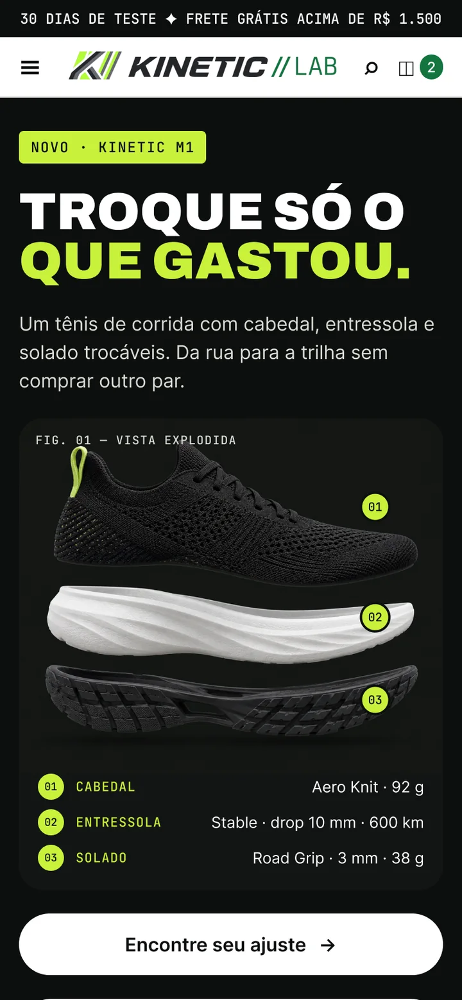
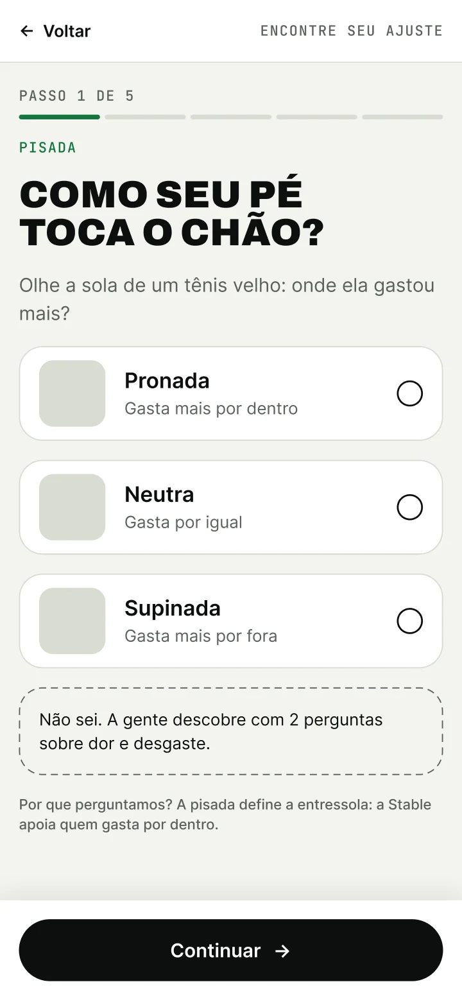
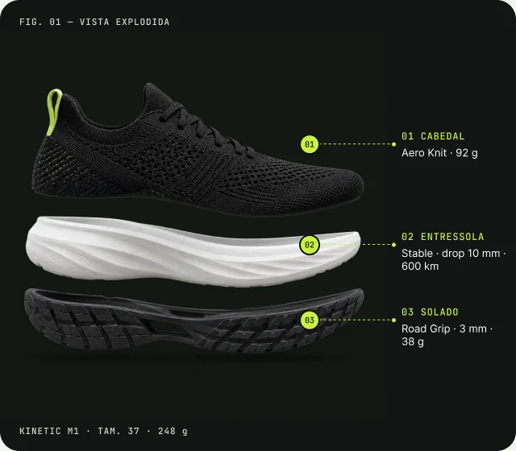
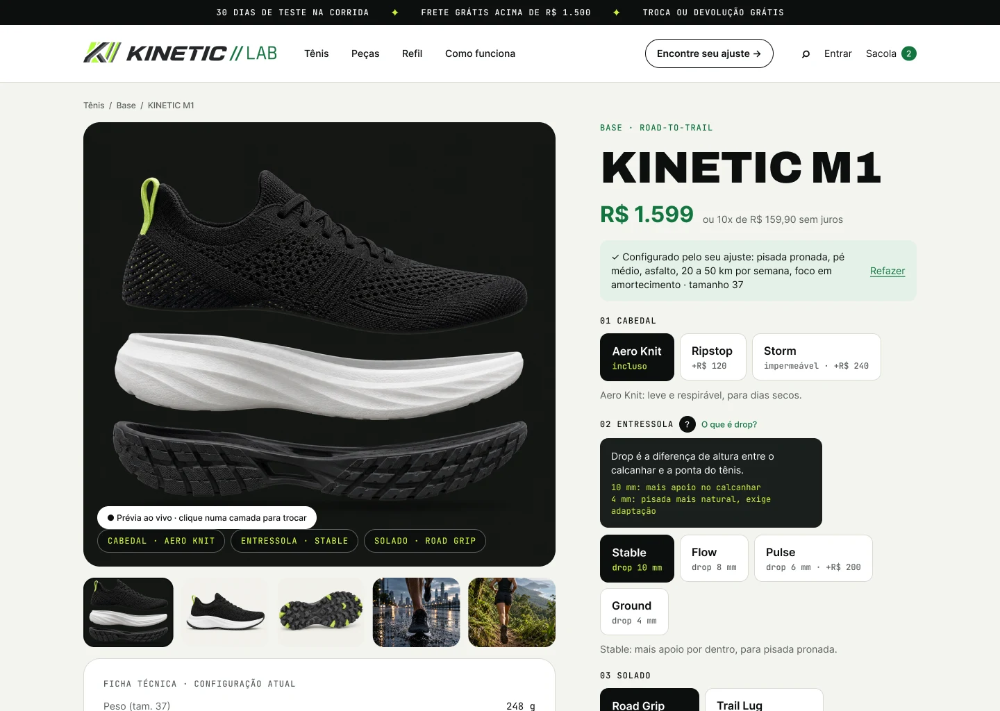
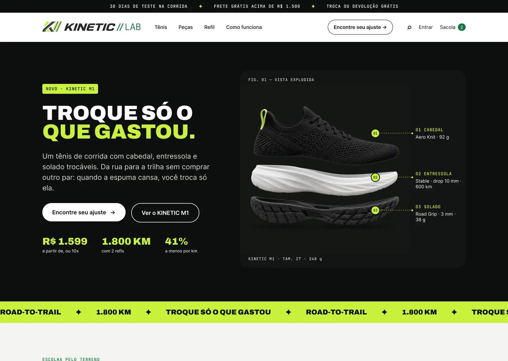
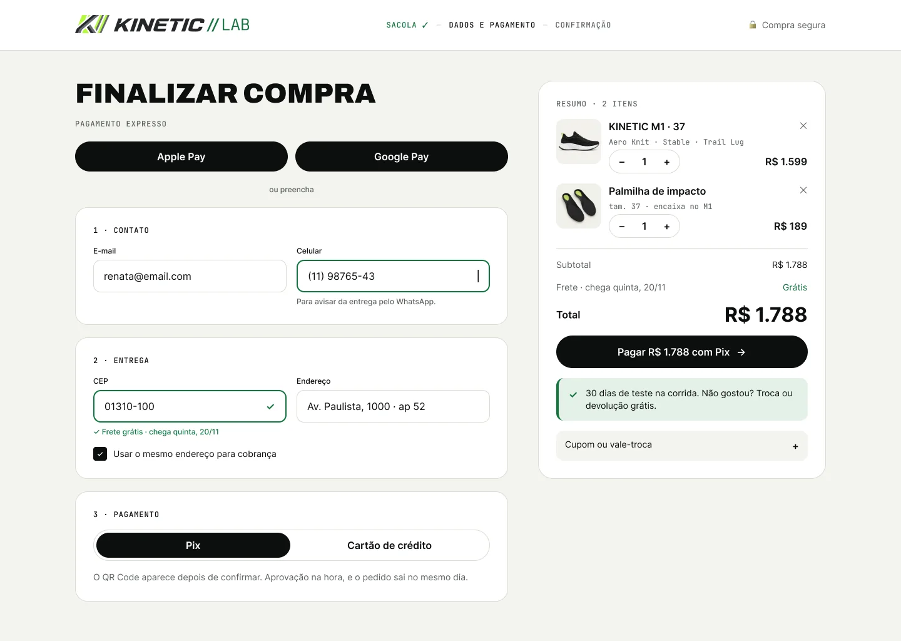

Estudo de caso · E-commerce mobile-first · 2026
KINETIC // LAB
Um tênis de corrida com cabedal, entressola e solado trocáveis. O desafio do brief era vender um produto de R$ 1.599 para quem tem medo de errar o tamanho.
Desafio de curso, a partir de um brief fechado. Li o brief com olhar crítico e refiz a conta de economia, que estava errada. Defini o escopo do MVP, a arquitetura e os fluxos, as decisões de produto e os preços, escolhi as três referências da direção visual e escrevi o roteiro e as tarefas do teste. Revisei cada tela e defini as correções do protótipo. Usei IA para ganhar tempo: o Claude montou a pesquisa simulada, os textos e as telas no Figma, e o Figma AI e o Gemini fizeram as fotos e a logo. O percurso das tarefas também foi simulado com IA. São 10 telas mobile, 3 desktop e um protótipo com 3 tarefas.



Pesquisa simulada
Montei duas personas a partir do brief.
Maratonista em São Paulo, 50 km por semana, pisada pronada. Já devolveu um tênis por causa do tamanho.
- Odeia formulário longo no celular
- Paga caro desde que tenha certeza
Corre 70 km por semana em Florianópolis, entre asfalto e trilha. Tem três pares para dar conta dos terrenos.
- A sola de trilha gasta no asfalto
- Compara ficha técnica antes de comprar
Os dois travam na mesma pergunta: qual peça e qual tamanho, sem poder experimentar.
Decisões de produto
Organizei as decisões pelas perguntas de quem está para comprar.
Encontre seu ajuste
"Qual tamanho eu peço?"
Cinco perguntas curtas, quase todas com "Não sei": pisada, número e largura do pé, quilômetros por semana, terreno e peso. A recomendação justifica cada peça com uma resposta e deixa escolher o foco: amortecimento, com a Stable, ou resposta, com a Pulse, R$ 200 mais cara. Pé largo sobe um número, e a troca é grátis em 30 dias.
Na primeira versão essa tela era fixa e dizia 37 para todo mundo. Errei aqui e só vi no percurso simulado.

A página do produto já chega configurada
"O que muda se eu trocar a sola?"
Três passos, cabedal, entressola e solado, com a estrutura do "Monte a sua" da loja lumiê. Cada opção mostra o dado técnico e quanto muda no preço.
Revisando o wireframe, tive que procurar o que era "drop". Se eu não sabia, quem compra também não ia saber, então a entressola ganhou um "O que é drop?".

O preço explicado por quilômetro
"Por que pagar R$ 1.599 num tênis?"
A espuma da entressola cansa antes do resto, e aqui se troca só ela, por R$ 349, a cada 600 km. Mostrei a conta em reais por quilômetro porque achei que o preço sozinho assusta.
| Em 1.800 km | Total | Por km |
|---|---|---|
| KINETIC M1 + 2 refis 41% a menos | R$ 2.297 | R$ 1,28 |
| 3 pares comuns de R$ 1.299 | R$ 3.897 | R$ 2,17 |
A conta supõe que cabedal e solado durem os 1.800 km. Com uma troca de solado (R$ 279), a economia cai para uns 34%.
Frete e garantia antes de pagar
"Quanto vou pagar no total?"
O frete aparece pelo CEP já na página do produto, e o botão final diz o valor: "Pagar R$ 1.788 com Pix". No Pix, o botão principal copia o código, porque ninguém lê um QR Code na tela do próprio celular.
Se o banco recusa o cartão, a tela avisa que nada foi cobrado e oferece o Pix. Deixei o campo do cartão sem marca de erro, já que o número está certo.


A compra já aponta para o refil
"E quando a espuma acabar?"
O pedido confirmado estima quando trocar a entressola pelo volume marcado no questionário. Com 20 a 50 km por semana, o refil vem entre 3 e 7 meses.

Design system e identidade
Juntei a estrutura da loja lumiê, os títulos em caixa alta do Sports News e o preto e verde da Sport Tênis. Como a marca se chama LAB, desenhei o tênis como numa prancha técnica.

#0D0F0ETexto e botão principal#F3F4EFFundo da página#13753FPreço, link e sucesso#C8F23ADestaque, só no escuroO verde-limão tem contraste de 1,3:1 sobre o branco, então só uso em fundo escuro.
Aa
Archivo Black nos títulos, Inter no texto e JetBrains Mono nos dados técnicos. Troquei a serifa itálica da lumiê pela mono porque ela tinha cara de joalheria.
13 cores e 13 estilos de texto em variáveis. O erro diz o que fazer: "CEP incompleto. Digite os 8 números".
Desktop
Desenhei primeiro o celular. No desktop, a explicação do drop já vem aberta.



Protótipo e percurso simulado
O protótipo tem 26 telas e estados, para a sacola mostrar sempre a sola e a palmilha escolhidas. Estas são as 3 tarefas do roteiro.
| Tarefa, como leio em voz alta | Conta como concluída quando |
|---|---|
| 1 · "Descubra qual tênis e qual tamanho a KINETIC recomenda para você." Depois: "Que número você compraria? Por quê?" | A pessoa chega na recomendação e diz um número |
| 2 · "No fim de semana você vai correr numa trilha. Troque a sola para a de trilha e adicione uma palmilha." | Trail Lug selecionado e palmilha na sacola |
| 3 · "Finalize a compra." No fim, sem a tela à vista: "Quanto você pagou de frete? E se o tênis não servir, o que acontece?" | Diz o frete e a troca em 30 dias sem voltar às telas |
Percurso cognitivo com 5 perfis
Sem corredores para recrutar, pedi a uma IA que fizesse o papel de 5 compradores, cada um por um caminho.
| Perfil | Problema encontrado |
|---|---|
| Calça 42, pisada neutra | A recomendação dizia "Você usa 37" e "pisada pronada" |
| Não sabe a pisada nem o número | As perguntas do "Não sei" e a medição com folha A4 não existiam |
| Troca a sola e põe a palmilha | A barra seguia em R$ 1.599 |
| Paga no cartão | A aba "Cartão" já abria com "pagamento recusado" |
| Paga no Pix | Copiar o código já confirmava o pedido |
O que mudou
As respostas agora ficam em variáveis do Figma, então a recomendação muda com o número e a largura do pé. Também entraram as perguntas do "Não sei", a tela da folha A4 e um pagamento que espera a confirmação.
Revisão das telas
Corrigi também três erros: a Pulse abria com o preço da Stable, o passo 1 vinha com uma resposta já marcada e o cartão recusado deixava o campo vermelho.
Limites e perguntas em aberto
- Nenhuma pessoa real usou o produto
A IA que fez o percurso sabe onde estão os botões e não se cansa, então não mostra onde alguém hesita.
- A primeira pergunta é a mais difícil
O questionário abre pela pisada, e não sei se o corredor sabe dizer a própria. Se a ordem atrapalhar, a pisada vai para o fim.
A medição com a folha A4 não mede a largura do pé. O desktop não tem catálogo nem estado de erro, e a foto do cabedal Storm, gerada por IA, mostra um tênis com outra sola.
A KINETIC // LAB é uma marca fictícia. O processo completo está no arquivo no Figma (abre em nova aba) e nos documentos no GitHub (abre em nova aba).